2013-2017 Summary Report
Report Information
What is the Census Project?
The Census is a collaborative research project that started in 2002. A research ethics committee at Université du Québec à Montréal (previously at Denver University) has determined that the project meets the standards to protect respondents and their confidentiality.
Although the BRC Census project is technically a survey and not a literal census (where data is collected from every member of a population), our methodology allows us to report on the entire population of Black Rock City (BRC), not just on the individuals who participate actively in our data collection efforts. This report contains data collected in 2017 and, when possible, comparable (weighted) data from 2013 through 2016.
The BRC Census project is made possible through the extensive collective effort of volunteers, academic researchers, and Burning Man Project. Our thanks to everyone whose contributions went into the creation of this report!
Methodology Overview
During Burning Man, Census volunteers conduct the random sample by administering a short socio-demographic survey to randomly selected Burners who agree to participate. It is the goal of the BRC Census team to randomly sample 5-10% of the incoming population each year.
After the event, announcements about the online survey are sent out via email lists, social media, the Burning Man website, etc. Some Burners participate but others do not, which introduces a self-selection bias in the survey results. To correct for this bias, the online survey results are adjusted (or “weighted”) based on the results of the random sample.
From 2013 to 2017, the number of submitted surveys (and the associated survey sampling rate) were:
| 2013 | 2014 | 2015 | 2016 | 2017 | |
|---|---|---|---|---|---|
| Total Number of Surveys | 11,919 | 11,676 | 9,585 | 7,137 | 9,168 |
| Survey Sampling Rate | 17% | 18% | 14% | 11% | 13% |
This "survey sampling rate" indicates the percentage of the BRC population who completed the online survey in a given year based on the population count reported in each annual Burning Man report.
Reading this Report
This Summary Report is not a comprehensive report of all 2017 BRC Census findings; it contains only a sub-set of the data collected. For:
- Detailed descriptions of methodology for data collection and analysis
- Terminology definitions (e.g., margin of error, 95% confidence intervals, etc.)
- Visualizations for data collected in 100+ questions from the 2017 online survey
Go to http://bit.ly/brccensus2017popanalysis to view the full 2013-2017 Population Analysis.
Sociodemographic Characteristics
Black Rock City Total Population
Total BRC Population
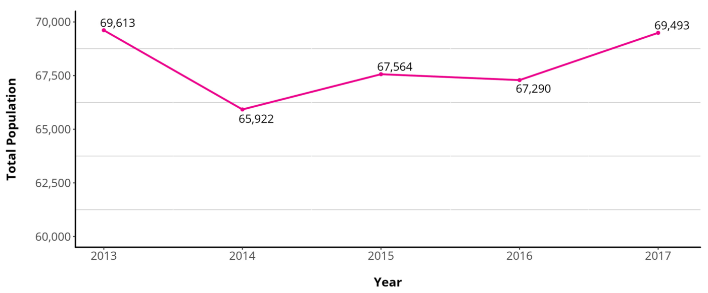
From https://burningman.org/timeline/
Prior Burning Man Experience
Number of Burns Attended (Prior to Current Year)
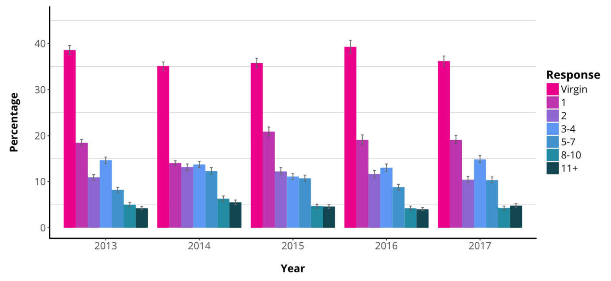
Percent Virgins:
2013: 38.6% 2014: 35.1% 2015: 35.8% 2016: 39.3% 2017: 36.2%
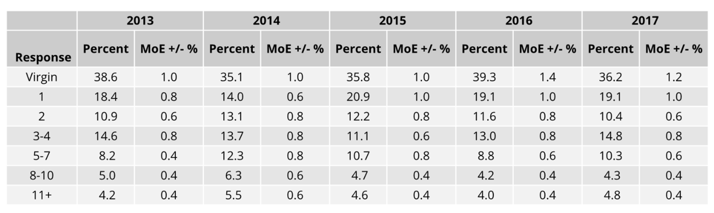
Error bars indicate the upper and lower bounds of the 95% confidence intervals.
Age Groups

Education
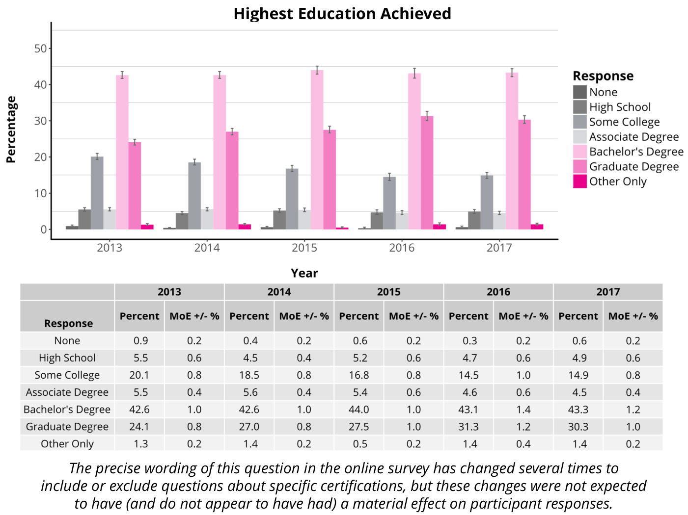
Error bars indicate the upper and lower bounds of the 95% confidence intervals.
Personal Income

Median Personal Income:
2013: $51,100
2014: $53,900
2015: $54,900
2016: $60,000
2017: $60,700
* In the 2015-17 surveys, explanatory text was added requesting that respondents not include their spouse's income as their own. While this explanatory text was missing in 2013-14, all four years' surveys explicitly asked for the respondent's personal income before taxes in the previous calendar year.
Error bars indicate the upper and lower bounds of the 95% confidence intervals.
Household Income
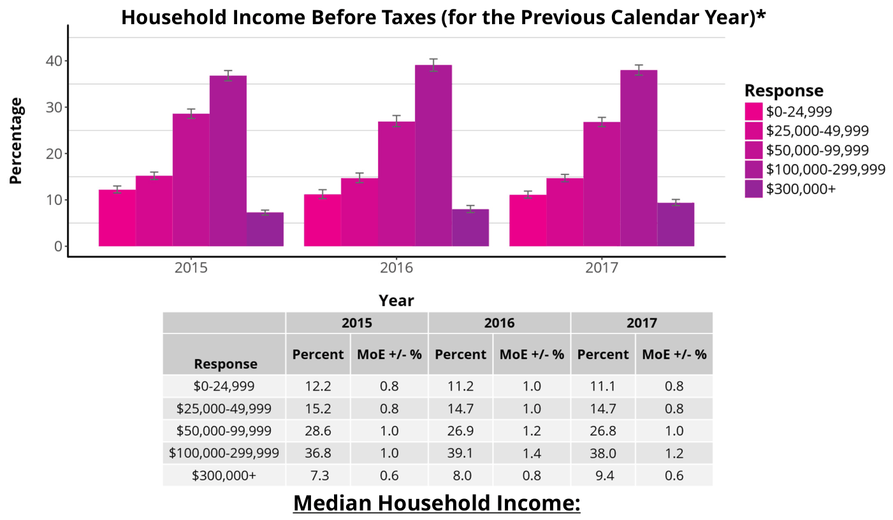
2015: $89,400
2016: $94,200
2017: $94,900
The 2013 and 2014 online surveys did not include questions about household income, so data presented here are from 2015-17.
* This plot and table excludes a small number of participants who indicated being a member of a household but chose not to disclose their household income. For participants indicating no household membership, personal income and household income are identical values. Error bars indicate the upper and lower bounds of the 95% confidence intervals.
Current Gender
Current Gender

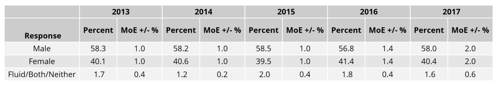
Additional questions about gender identity were included in each year’s online survey. For these additional details, see page 5 of this report for the link to the full 2013-2017 Population Analysis.
Error bars indicate the upper and lower bounds of the 95% confidence intervals.
Ethnoracial Characteristics

* "Middle Eastern or North African" was added as an option in the 2017 online survey, which may have resulted in decreases in the "White/Caucasian" and "Other or Multiple" categories.
Error bars indicate the upper and lower bounds of the 95% confidence intervals.
Current Residence
By Region

US Residents by State

Language
![Native Language* * "Native language" was defined in the online survey as the first language learned and still used. ** The plot (left) and table (above) report data for any language reported by 1.0% or more of BRC residents in at least one year from 2013-17, including "Other" for residents whose native language was not listed in the online survey options. The listed language options excluded from the plot and table here are: Arabic, Danish, Farsi, Hindi, Japanese, Norwegian, Polish, Portuguese, Punjabi, Romanian, Swedish, Tagalog, and Urdu. Error bars indicate the upper and lower bounds of the 95% confidence intervals.](images/p016-013-page.png)
Sexual Orientation
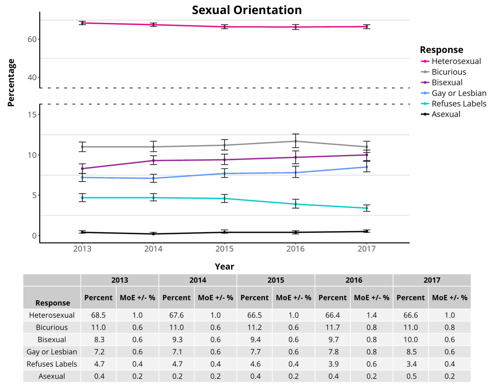
Error bars indicate the upper and lower bounds of the 95% confidence intervals.
Relationship Status
Participant Responses to the Question, “In the Default World Do You Share Your Life with a Partner?”
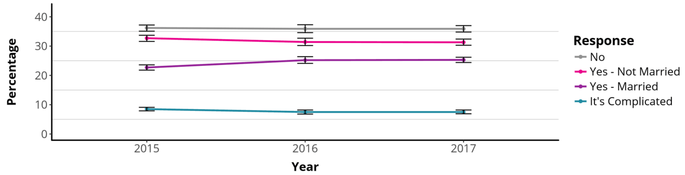

The 2013 and 2014 online surveys asked about relationships differently, so direct comparison is impossible. Data presented here are from 2015-17.
Error bars indicate the upper and lower bounds of the 95% confidence intervals.
Religion and Spirituality
Spiritual Identity

Religious Denomination

US Politics
Voting Behavior
US Voting History

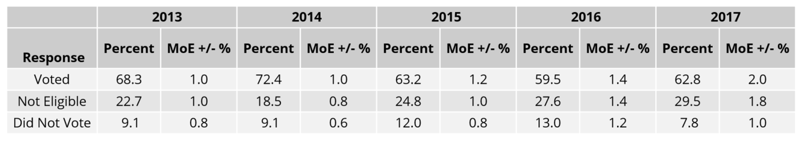
* Eligible voters in the "Voted" population indicated voting in 1+ US federal elections over the four years prior to the year of the survey. Eligible participants in the "Did Not Vote“ population indicated voting in 0 US federal elections over the same time period.
Error bars indicate the upper and lower bounds of the 95% confidence intervals.
Party Affiliation
![US Political Party Affiliation* * The plot and table above represent BRC participants who indicated eligibility to vote in the United States and selected one of the provided answer options. It excludes participants who indicated ineligibility to vote, or who indicated eligibility but declined to answer the online survey question about US political party affiliation. ** "American Independent Party (formerly America's Party)" was provided as an option in the 2013-16 online surveys but was removed in 2017, which may have impacted the frequency of other responses. Error bars indicate the upper and lower bounds of the 95% confidence intervals.](images/p022-021-page.png)
Experiences in Black Rock City
Transportation
Port of Entry
![Port of Entry into BRC The 2013 and 2014 online surveys asked about transportation methods differently, so direct comparison is impossible. Overall trends include: • A relative decrease in Gate entry via vehicle (99.1% in 2013, 96.0% in 2014) • A relative increase in Burner Express Bus use (from 1.9% in 2014) • A relative increase in Airport traffic (0.5% in 2013, 0.8% in 2014) Data presented in the plot (left) and data table (below) are from 2015-17. Error bars indicate the upper and lower bounds of the 95% confidence intervals.](images/p024-022-page.png)
Vehicle Type
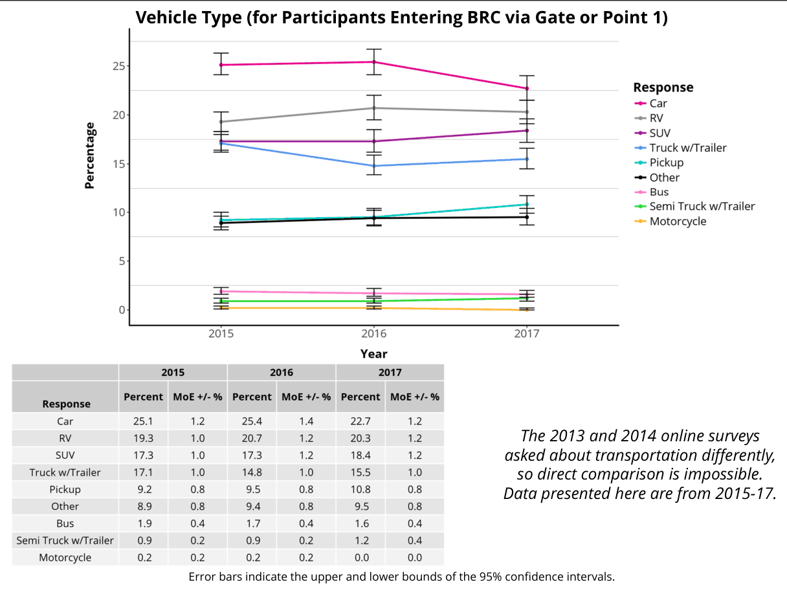
Leave No Trace
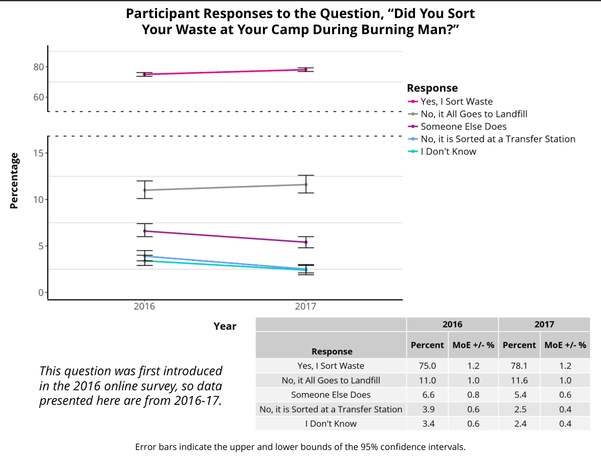
On-Playa Power Sources
Power Source(s) Used On-Playa (Participants Selected All Options That Applied)

RV or Camper-Trailer User
Participant Responses to the Question, “Did You Stay in an RV or Camper-Trailer in Black Rock City This Year?”
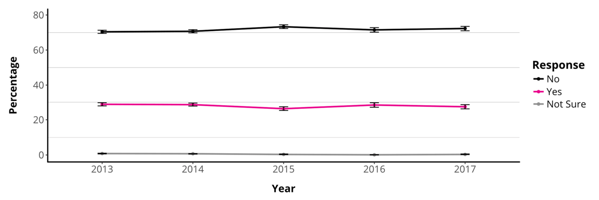

Error bars indicate the upper and lower bounds of the 95% confidence intervals.
Camping On-Playa
Placed Camps
Participant Responses to the Question, “Was Your Camp Location Assigned by the Burning Man Placement Team Before Burning Man?”

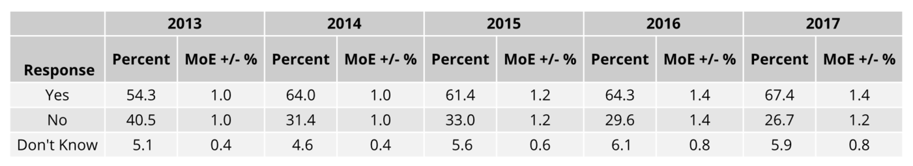
Error bars indicate the upper and lower bounds of the 95% confidence intervals.
Non-Placed Camps
Determining Factors for Camp Location Selection (for Participants with Camp Location Not Pre-Assigned by the Burning Man Placement Team, Participants Selected Up to Three Options)

This question was not included in the 2013 or 2014 online surveys, so data presented here are from 2015-17.
Error bars indicate the upper and lower bounds of the 95% confidence intervals.
Reasons for Attending Burning Man
![Reasons for Attending Burning Man this Year (Participants Selected Up to Three Options) * In the online survey this option was worded as "To be with friends or like- minded people / feel a sense of belonging." ** In the online survey this option was worded as "To satisfy my curiosity / check it off my ‘bucket list.’” This question was not included in the 2013 or 2014 online surveys, so data presented here are from 2015-17. Error bars indicate the upper and lower bounds of the 95% confidence intervals.](images/p031-031-page.png)
Feelings of Safety
Participant Responses to the Question, “Did You Feel Safe in Black Rock City This Year?”

This question was not included in the 2013 or 2014 online surveys, so data presented here are from 2015-17.
Error bars indicate the upper and lower bounds of the 95% confidence intervals.
New Friends and Activities
Participant Responses to the Question, “Do You Engage in New Playful Activities, After Going to BRC?”
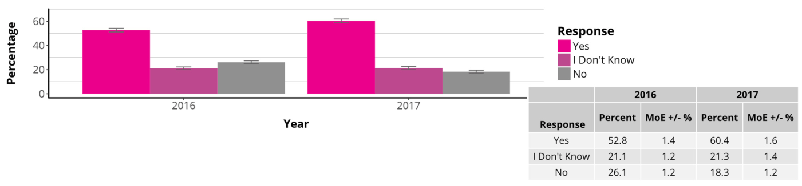
Participant Responses to the Question, “Do You Have New Friends That You Interact With in the Default World, After Going to BRC?”
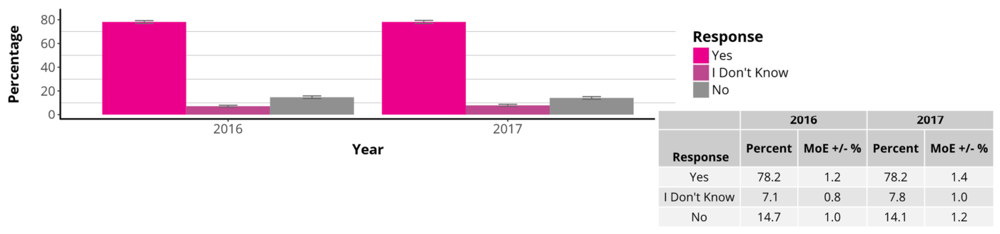
These questions were first introduced in the 2016 online survey, so data presented here are from 2016-17.
Error bars indicate the upper and lower bounds of the 95% confidence intervals.
Learning Inspired by Burning Man
Participant Responses to the Question, “After Going to BRC, Were You Inspired to Learn or Practice Any of the Following Skills?” (Participants Selected All Options That Applied)
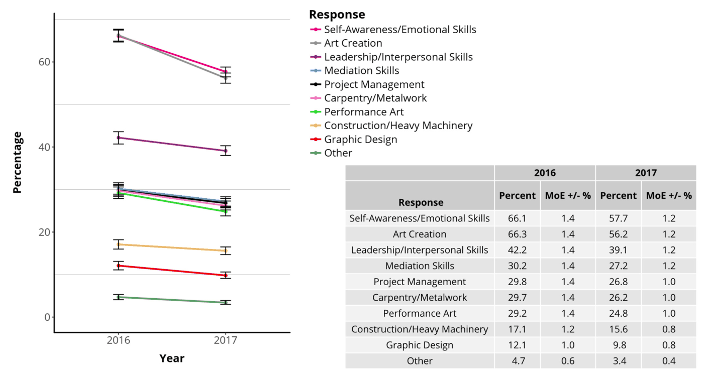
This question was first introduced in the 2016 online survey, so data presented here are from 2016-17.
Error bars indicate the upper and lower bounds of the 95% confidence intervals.
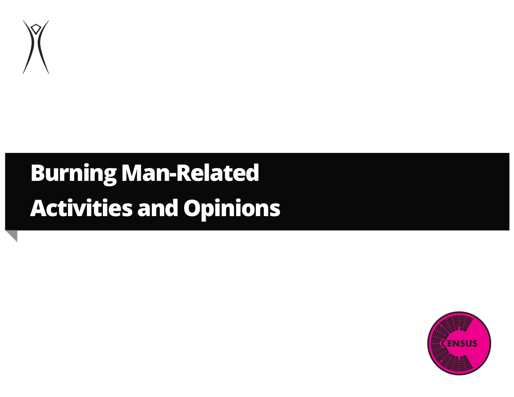
Year-Round Participation
Participant Attendance at Regional Burning Man Events/Mixers/Gatherings
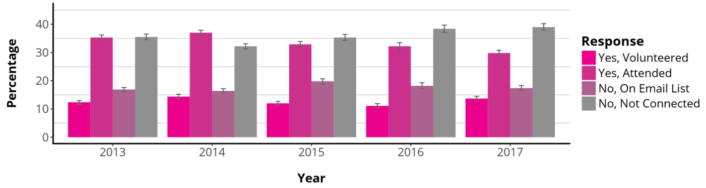
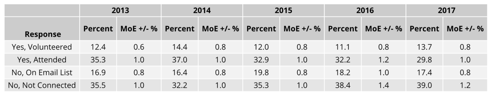
This question was not included in the 2013 or 2014 online surveys, so data presented here are from 2015-17.
Error bars indicate the upper and lower bounds of the 95% confidence intervals.
Ten Principles
Participant Perceptions
Participant Responses to the Question, “How Important Are the Ten Principles to You?”

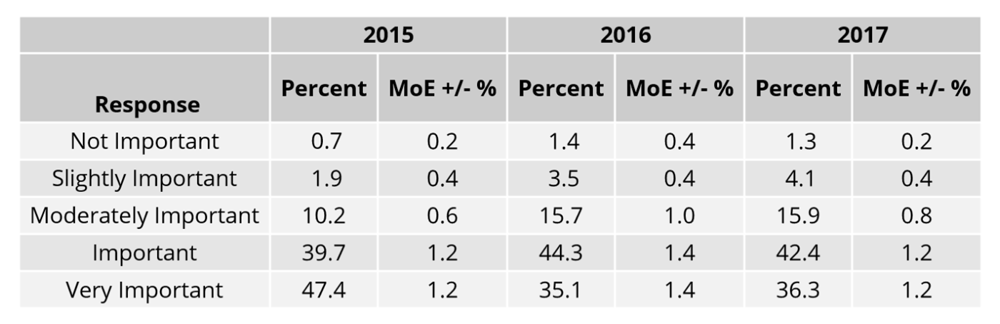
This question was not included in the 2013 or 2014 online surveys, so data presented here are from 2015-17.
Error bars indicate the upper and lower bounds of the 95% confidence intervals.
Participant Responses to the Question, “How Essential Are the Ten Principles to Creating An Authentic Burning Man Experience?”
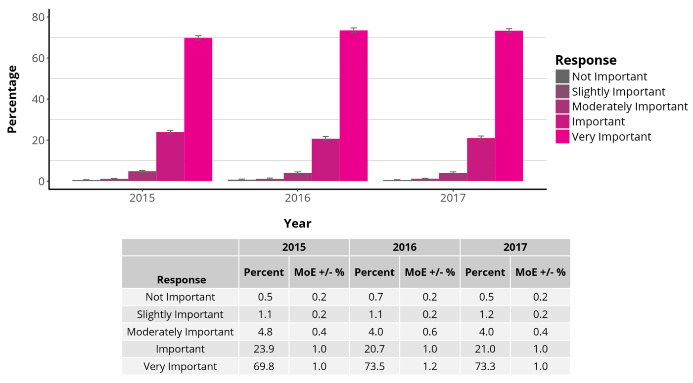
This question was not included in the 2013 or 2014 online surveys, so data presented here are from 2015-17.
Error bars indicate the upper and lower bounds of the 95% confidence intervals.
Practice in Everyday Life


Burning Man Spending and Tickets
Economic Impact on Nevada
Spending Ranges
Spending Ranges for Total Expenses In Nevada

Error bars indicate the upper and lower bounds of the 95% confidence intervals.
Spending by Category

Spending for Burning Man
![Amount of Money (USD) Spent to Go to Burning Man (Excluding Ticket Price) This question was not included in the 2013 online survey, so data presented here are from 2014-17. Participants were asked to provide their best estimate (in US dollars) of how much they spent to go to Black Rock City and return, including fuel, food, lodging, airfare, supplies, etc., but excluding the cost of their Burning Man ticket. 80th Median: Percentile: 2014*: $1300 $2500 2015: $1500 $2600 2016: $1500 $3000 2017: $1500 $3000 * The 2014 online survey asked about spending ranges, but did not ask for total amount spent, so percentile data for 2014 was estimated differently than for 2015-17. Error bars indicate the upper and lower bounds of the 95% confidence intervals.](images/p044-046-page.png)
Ticket Cost
Burning Man Ticket Cost

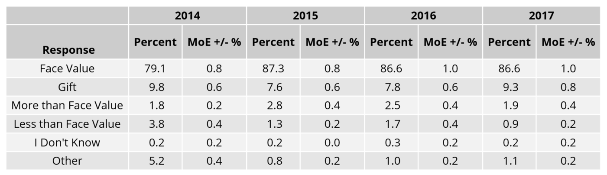
This question was not included in the 2013 online survey, so data presented here are from 2014-17.
Error bars indicate the upper and lower bounds of the 95% confidence intervals.
Ticket Source
2017 Ticket Data
2017 Burning Man Ticket Source

The 2017 online survey listed these options differently than they have been listed in past years’ surveys, so data presented here are from 2017. For 2015-16 ticket source data, see page 5 of this report for the link to the full 2013-2017 Population Analysis.
Error bars indicate the upper and lower bounds of the 95% confidence intervals.
BRC Census Team Information
Contributions and Acknowledgements
BRC Census General Coordination and Scientific Committee: Dana “DV8” DeVaul, Dominic “Hunter” Beaulieu-Prévost, and S. Megan “Countess” Heller
Data Analysis: Dominic “Hunter” Beaulieu-Prévost, Aaron “Murrs” Shev, and Dana “DV8” DeVaul
Report Coordination and Visualizations: Dana “DV8” DeVaul
Report Editing and Proofreading: Chris “Kindred” Adams, Sherry “Moonbeams” Beard, Joseph “JOBI” Buchman, Rich “Popeye” Ferry, Morgan “Morganism” Fleming, Elana “Mhysa” Ford, Joonas “Allfish” Iivonen, Netti “Butterfly” Johnston, Cameron “Stealth” Mitchell, Dorothy Morgan, Jaimee “Cali Green” Nix, Simone “Gridge” Pagan Griso, Aaron “Murrs” Shev, Ashley “Strange” Strange, and Sarah “Picky” Williamson
The 2017 Census Lab: The project also involved more than 175 essential volunteers: research collaborators, volunteer coordinators, statisticians, camp builders, gate samplers, keypunchers, Census Lab hosts, graphic designers, and many more
We would also like to thank the Burning Man Communications Department and the Burning Man Tech Team, especially Erika “Deputy” O’Connor and Mark “Markle” Levitt.
We would also like to thank all of the Burning Man participants who have taken the time to provide their data. This project would not exist without our respondents.
Finally, our thanks to Burning Man Project for the resources they provide both on playa and off playa and for believing in the project!
Still Curious?
To contact the Census Lab, email census@burningman.org
Census Lab Blog: http://journal.burningman.org/census
Census Lab Data Archive: http://burningman.org/culture/history/brc-history/census-data/
Citation: DeVaul, D.L., Beaulieu-Prévost, D., Heller, S.M., and the 2017 Census Lab. (2017). Black Rock City Census: 2013-2017 Summary Report. Black Rock City Census. Copyright © 2018 DeVaul et al.
This is an open-access report distributed under the terms of Creative Commons Attribution License, which permits unrestricted use, distribution, and reproduction in any medium, provided the original authors and source are credited.